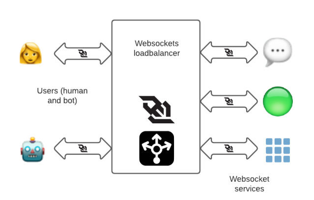

本文译自 Migrating Millions of Concurrent Websockets to Envoy，原文发布于 2021 年。作者是 Ariane van der Steldt Staff Software Engineer, Site Reliability，Radha Kumari Sr. Software Engineer, Site Reliability。
Slack 有一个全球客户群，在高峰期有数百万同时连接的用户。用户之间的大部分通信涉及到向对方发送大量的微小信息。在 Slack 的大部分历史中，我们一直使用 HAProxy 作为所有传入流量的负载均衡器。今天，我们将讨论我们在使用 HAProxy 时所面临的问题，我们如何用 Envoy Proxy 来解决这些问题，迁移所涉及的步骤，以及结果是什么。让我们开始吧！
Slack 的 Websockets
为了即时传递信息，我们使用 websocket 连接，这是一种双向的通信链接，负责让你看到 “有几个人在打字……"，然后是他们打的东西，速度几乎是光速的。websocket 连接被摄取到一个叫做 “wss”（WebSocket 服务）的系统中，可以通过 wss-primary.slack.com 和 wss-backup.slack.com（这不是网站，如果去访问，只会得到一个 HTTP 404）从互联网上访问。
Websocket 连接一开始是普通的 HTTPS 连接，然后客户端发出协议切换请求，将连接升级为 Websocket。在 Slack，我们有不同的 websocket 服务，专门用于消息、在线（列出哪些联系人在线）和其他服务。其中一个 websocket 端点是专门为需要与 Slack 互动的应用程序制作的（因为应用程序也想要实时通信）。

过去，我们在多个 AWS Region 有一组专门用于 websockets 的 HAProxy 实例，以终止靠近用户的 websocket 连接，并将请求转发给相应的后端服务。
迁移到 Envoy Proxy 的动机
虽然我们从 Slack 开始就一直在使用 HAproxy，并且知道如何大规模地操作它，但有一些操作上的挑战让我们考虑替代方案，比如 Envoy Proxy。
热重启
在 Slack，后端服务端点列表的变化是一个常见的事件（由于实例被添加或删除）。HAProxy 提供两种方法来更新其配置，以适应端点列表的变化。一种是使用 HAProxy Runtime API。我们在其中一套 HAProxy 实例中使用了这种方法，我们的经验在另一篇博文中有所描述 —— 在 Slack 的可怕的、恐怖的、没有好处的、非常糟糕的一天。另一种方法，我们用于 websockets 负载均衡器（LB），是将后端渲染到 HAProxy 配置文件中，然后重新加载 HAProxy。
每次 HAProxy 重载时，都会创建一组新的进程来处理新进入的连接。我们会让旧的进程持续运行很多小时，以便让长寿的 websocket 连接耗尽，避免用户频繁断开连接。然而，我们不能有太多的 HAProxy 进程，每个进程都运行着它自己 “当时” 的配置副本 —— 我们希望实例能更快地汇聚到新版本的配置上。我们不得不定期收割旧的 HAProxy 进程，并限制 HAProxy 重新加载的频率，以防底层后端出现混乱。
无论我们使用哪种方法，都需要一些额外的基础设施来管理 HAProxy 的重新加载。
Envoy 允许我们使用动态配置的集群和端点，这意味着如果端点列表发生变化，它不需要重新加载。如果代码或配置确实发生了变化，Envoy 有能力在不放弃任何连接的情况下热重启自己。Envoy 通过 inotify 观察文件系统配置的更新。在热重启过程中，Envoy 还将统计数据从父进程复制到子进程中，因此仪表和计数器不会被重置。
这一切都使 Envoy 的运营开销大大减少，而且不需要额外的服务来管理配置变化或重新启动。
负载均衡功能
Envoy 提供了一些先进的负载均衡功能，如：
- 内置支持区域感知路由的功能
- 通过异常值检测进行被动健康检查
- 恐慌路由：Envoy 通常只将流量路由到健康的后端，但是如果健康主机的百分比低于某个阈值，它可以被配置为将流量发送到所有的后端，不管是健康的还是不健康的。这在我们 2021 年 1 月 4 日的故障中非常有帮助，这次故障是由我们基础设施中的一个广泛的网络问题引起的。
由于上述原因，在 2019 年，我们决定将我们的入口负载均衡层从 HAproxy 迁移到 Envoy Proxy，从 websockets 堆栈开始。迁移的主要目标是提高可操作性，获得 Envoy 提供的新功能，以及更加标准化。通过在整个 Slack 中从 HAProxy 迁移到 Envoy，我们的团队将不再需要了解两个软件的怪异之处，不再需要维护两种不同的配置，不再需要管理两个构建和发布管道，诸如此类。那时，我们已经在使用 Envoy Proxy 作为我们服务网格中的数据平面。我们内部也有经验丰富的 Envoy 开发人员，所以我们可以随时获得 Envoy 的专业知识。
生成 Envoy 配置
这次迁移的第一步是审查我们现有的 websocket 层配置，并生成一个同等的 Envoy 配置。在迁移过程中，管理 Envoy 配置是我们最大的挑战之一。Envoy 有丰富的功能集，其配置与 HAProxy 的配置有很大的不同。Envoy 配置涉及四个主要概念：
- Listener，接收请求，又称 TCP 套接字、SSL 套接字或 unix 域套接字。
- Cluster，代表我们发送请求的内部服务，如消息服务器和存在服务器
- Route，将 Listener 和 Cluster 连接在一起
- Filter，它对请求进行操作
Slack 的配置管理主要是通过 Chef 完成的。当我们开始使用 Envoy 时，我们把 Envoy 配置作为 chef 模板文件来部署，但它的管理变得很麻烦，而且容易出错。为了解决这个问题，我们建立了 chef 库和自定义资源来生成 Envoy 配置。
在 Chef 内部，配置是一个单例，模拟了每个主机只有一个 Envoy 配置的情况。所有的 Chef 资源都在这个单例上操作，添加监听器、路由或集群。在 Chef 运行的最后，envoy.yaml 被生成、验证，然后安装 —— 我们从不写中间配置，因为这些配置可能是无效的。
这个例子展示了我们如何创建一个有两条路由的 HTTP 监听器，将流量路由到两个动态集群。
要在 Envoy 中复制我们复杂的 HAProxy 配置需要一些努力。大部分需要的功能在 Envoy 中已经有了，所以只需要在 chef 库中加入对它的支持就可以了。我们实现了一些缺失的 Envoy 功能（有些是上游贡献的，有些是内部维护的扩展）。
对我们的新配置进行测试和验证
测试新的 Envoy websockets 层是一个迭代的过程。我们经常用手工编码的 Envoy 配置做原型，并在本地的开发机器上测试，每个监听器、路由和集群都有一个。手工编码的修改一旦成功，就会被移到 chef 库中。
HTTP 路由是用 curl 测试的：
- 基于头和 cookie 的特定路由到特定后端
- 基于路径、前缀和查询参数的路由到特定后端
- SSL 证书
当事情没有达到预期效果时，我们在机器上使用 Envoy 调试日志。调试日志清楚地解释了为什么 Envoy 选择将一个特定的请求路由到一个特定的集群。Envoy 的调试日志非常有用，但也很冗长，而且很昂贵（你真的不想在生产环境中启用这个功能）。调试日志可以通过 Curl 启用，如下所示。
curl -X POST http://localhost:<envoy_admin_port>/logging?level=debug
Envoy 管理接口在初始调试时也很有用，特别是这些端点：
- clusters：显示所有配置的集群，包括每个集群中所有上游主机的信息以及每个主机的统计数据。
- /certs：以 JSON 格式显示所有加载的 TLS 证书，包括文件名、序列号、主体替代名称和到期前的天数。
- /listeners：显示所有配置的监听器及其名称和地址。
我们的 Chef 库使用 -mode validate 命令行选项运行 Envoy，作为一个验证步骤，以防止安装无效的配置。这也可以手动完成。
sudo /path/to/envoy/binary -c </path/to/envoy.yaml> --mode validate
Envoy 提供 JSON 格式的监听器日志。我们将这些日志录入我们的日志管道（当然是在对日志进行 PII 处理后），这对调试工作经常很有帮助。
一旦对开发环境中的配置有信心，我们就准备做一些更多的测试 – 在生产中！"。
迁移至生产
为了将迁移过程中的风险降到最低，我们建立了一个新的 Envoy websocket 栈，其配置与现有的 HAProxy 层相当。这意味着我们可以逐步、有控制地将流量转移到新的 Envoy 堆栈，并且在必要时可以快速切换回 HAProxy。缺点是我们的 AWS 成本 —— 我们在迁移过程中使用了双倍的资源，但我们愿意花费时间和资源为我们的客户透明地进行迁移。
我们通过 NS1 管理我们的 DNS 记录 wss-primary.slack.com 和 wss-backup.slack.com。我们使用加权路由将流量从 haproxy-wss 转移到 envoy-wss NLB DNS 名称。第一批区域是以 10%、25%、50%、75% 和 100% 的步骤单独上线的。由于我们对新的 Envoy 层和上线过程有信心，所以最后的区域上线速度更快（25%、50%、75%、100% 只需两天，而之前的一个区域需要一周的时间）。
尽管迁移工作很顺利，没有出现故障，但还是出现了一些小问题，比如超时值和 header 的差异。在迁移过程中，我们多次恢复、修复，并再次上线。
经过漫长而激动人心的 6 个月，迁移完成了，整个 HAProxy websocket 堆栈在全球范围内被 Envoy Proxy 取代，对客户的影响为零。
哪些进展顺利，哪些不顺利
迁移本身是相对平淡和无聊的。枯燥是一件好事：刺激意味着事情的中断，枯燥意味着一切顺利。
我们发现，旧的 HAProxy 配置随着时间的推移而有机地增长。它在很大程度上是由 HAProxy 使用的模型形成的 —— 一个包括所有监听器的大型配置。Envoy 的配置模型比 HAProxy 的模型使用更多的定义范围。一旦一个监听器被输入，只有该监听器内的规则适用于请求。一旦输入一个路由，只有该路由上的规则适用。这使得将规则与相关的请求联系起来更加容易。
我们花了很长时间从旧的 HAProxy 配置中提取重要的东西，这实际上是技术债务。通常很难弄清楚为什么会有某个规则，哪些是有意的，哪些是无意的，以及其他服务所依赖的行为是什么。例如，有些服务应该只在两个虚拟主机（vhosts）中的一个下，但实际上在 HAProxy 的两个 vhosts 下都可用。我们不得不复制这个错误，因为现有的代码依赖于这种行为。
我们在 HAProxy 堆栈中错过了一些细微的东西。有时这些是很重要的 —— 我们破坏了 Slack 的每日活跃用户（DAU）指标（哎呀！）。也有很多小问题需要解决。负载均衡器的行为很复杂，除了花时间调试外，没有真正的办法解决这个问题。
我们开始迁移时，没有为负载均衡器的配置提供测试框架。我们没有自动测试来验证测试的 URL 路由到正确的端点以及与请求和响应头相关的行为，而是有…… 一个 HAProxy 配置。在迁移过程中，测试是很有帮助的，因为它们可以提供很多关于预期行为的原因的背景。因为我们缺乏测试，所以我们经常不得不向服务所有者询问，以了解他们所依赖的行为。
我们建立的 Chef 资源有意只支持 Envoy 功能的一个子集。这使我们的库更简单 —— 我们只需要考虑我们实际使用的功能。缺点是，每次我们想使用新的 Envoy 功能时，都必须在我们的 Chef 库中添加对这些功能的支持。例如，SNI（https）监听器是在开发过程中编写的，当时我们认为这比向现有的监听器添加支持更简单。然而，当涉及到 vhost 支持时，我们已经开发了很多代码并在使用中，重构整个公司其他地方正在使用的资源将花费很长时间。我们的 Chef 库中的 vhost 支持是一个 hack（很快有一天我们会修复它）。
为了使改变 Envoy 资源 Chef 库更加安全，换句话说，确保我们不会破坏其他使用我们库的团队，我们引入了一套全面的测试，生成这些团队的整个配置。这使得我们可以很容易地知道，当我们更新 Envoy Chef 资源时，我们生成的所有 Envoy 配置会（或不会）受到什么影响。
这次迁移（和其他迁移一样）的关键事项之一是沟通。我们努力让每个人都了解并配合我们正在进行的改变。我们的客户体验（CE）团队是一个很好的合作伙伴 —— 他们能够监控传入的工单，以发现任何可能表明用户因这次迁移而受到影响的情况。
下一步是什么？
尽管偶尔会遇到一些小挫折，但 envoy websocket 的迁移还是非常成功的。我们已经跟进，将另一个关键的 Slack 服务，即我们的软件客户端指标摄取管道 —— 与我们的其他入口负载均衡器隔离 —— 迁移到 Envoy Proxy。我们几乎已经完成了将我们的网络和 API 流量的内部负载均衡器迁移到 Envoy。这场史诗般的迁移的最后一部分是将我们的（常规的、非 websocket 的）HTTP 堆栈从 HAProxy 迁移到 Envoy，这也是正在进行的。
我们的最终目标是在入口负载均衡器和服务网格数据平面上实现 Envoy Proxy 的标准化，这将大大降低团队的认知负荷和操作复杂性，并使 Envoy 的先进功能在我们的负载均衡基础设施中得到应用。自从迁移到 Envoy 后，我们已经大大超过了以前的峰值负载，没有任何问题。